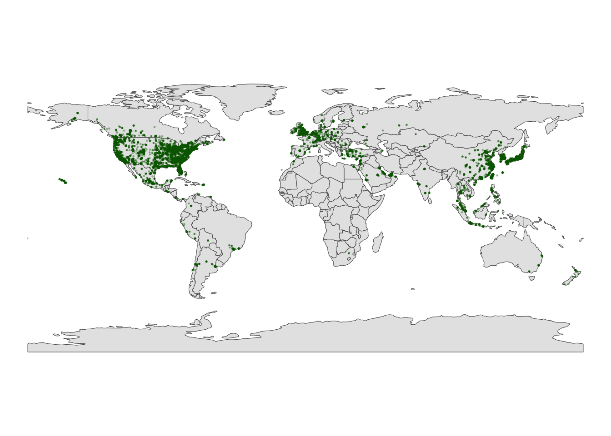
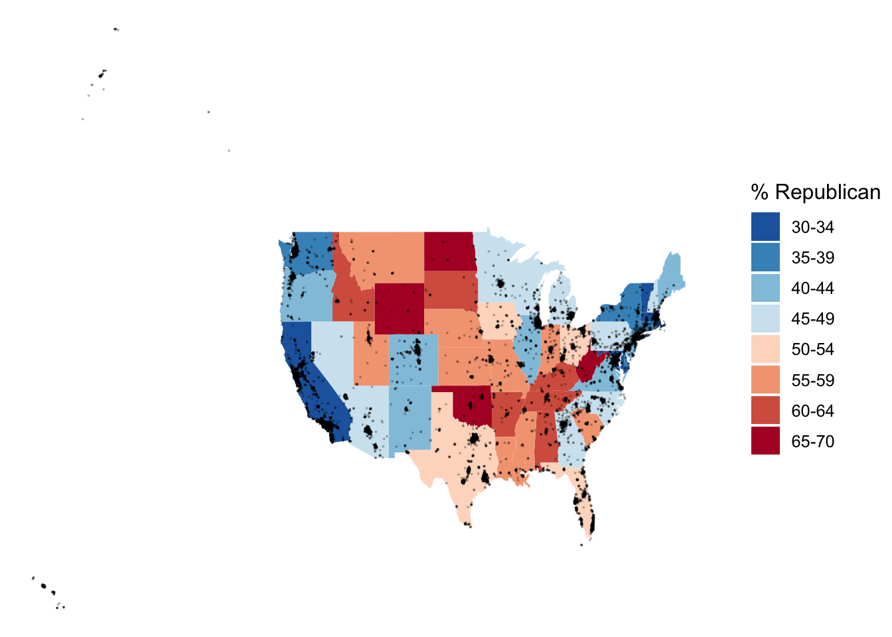
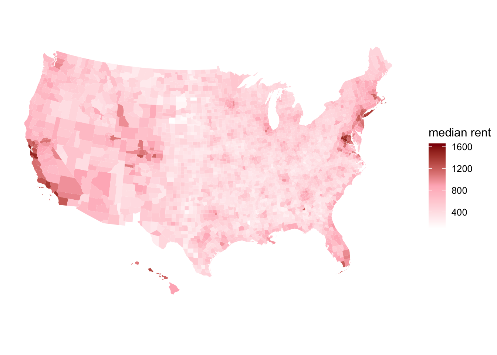
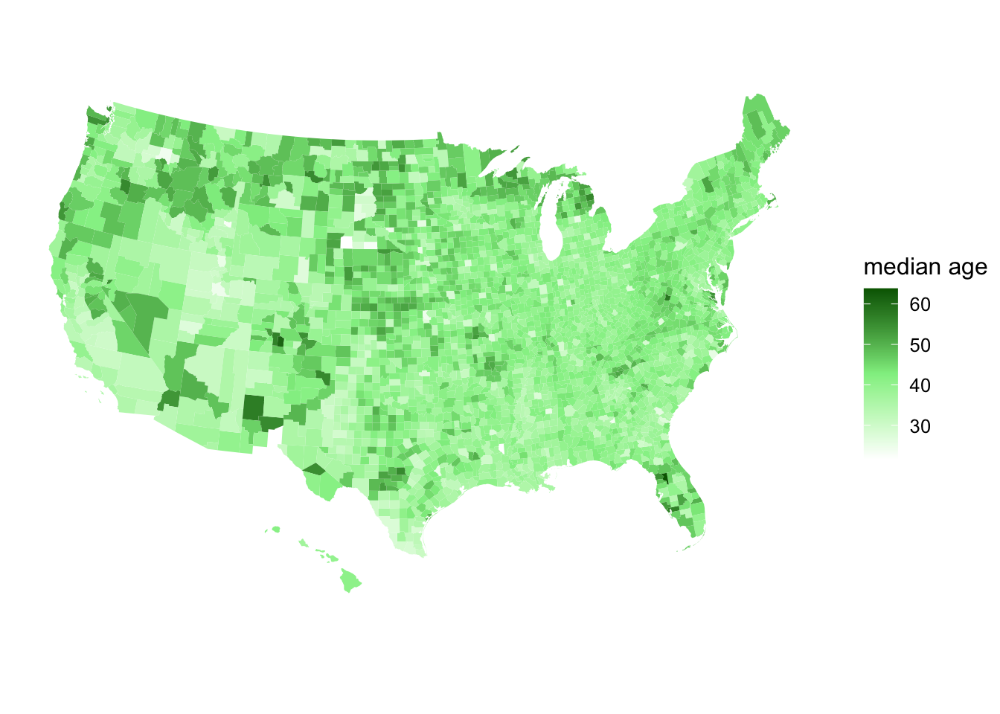

── Attaching core tidyverse packages ──────────────────────── tidyverse 2.0.0 ──
✔ dplyr 1.1.4 ✔ readr 2.1.5
✔ forcats 1.0.0 ✔ stringr 1.5.1
✔ ggplot2 3.5.1 ✔ tibble 3.2.1
✔ lubridate 1.9.4 ✔ tidyr 1.3.1
✔ purrr 1.0.2
── Conflicts ────────────────────────────────────────── tidyverse_conflicts() ──
✖ dplyr::filter() masks stats::filter()
✖ dplyr::lag() masks stats::lag()
ℹ Use the conflicted package (<http://conflicted.r-lib.org/>) to force all conflicts to become errors10 Spatial Viz
Use this file for practice with the spatial viz in-class activity. Refer to the class website for details.
10.0.1 Preview
You’ll explore some R spatial viz tools below. In general, there are two important pieces to every map:
Piece 1: A dataset
This dataset must include either:
- location coordinates for your points of interest (for point maps); or
- variable outcomes for your regions of interest (for choropleth maps)
Piece 2: A background map
We need latitude and longitude coordinates to specify the boundaries for your regions of interest (eg: countries, states). This is where it gets really sticky!
- County-level, state-level, country-level, continent-level info live in multiple places.
- Where we grab this info can depend upon whether we want to make a point map or a choropleth map. (The background maps can be used somewhat interchangeably, but it requires extra code :/)
- Where we grab this info can also depend upon the structure of our data and how much data wrangling / cleaning we’re up for. For choropleth maps, the labels of regions in our data must match those in the background map. For example, if our data labels states with their abbreviations (eg: MN) and the background map refers to them as full names in lower case (eg: minnesota), we have to wrangle our data so that it matches the background map.
In short, the code for spatial viz gets very specialized. The goal of these exercises is to:
- play around and experience the wide variety of spatial viz tools out there
- understand the difference between point maps and choropleth maps
- have fun
You can skip around as you wish and it’s totally fine if you don’t finish everything. Just come back at some point to play around.
Part 1: Interactive points on a map with leaflet
Leaflet is an open-source JavaScript library for creating maps. We can use it inside R through the leaflet package.
This uses a different plotting framework than ggplot2, but still has a tidyverse feel (which will become more clear as we learn other tidyverse tools!).
The general steps are as follows:
- Create a map widget by calling
leaflet()and telling it the data to use. - Add a base map using
addTiles()(the default) oraddProviderTiles(). - Add layers to the map using layer functions (e.g.
addMarkers(),addPolygons()). - Print the map widget to display it.
Exercise 1: A leaflet with markers / points
Earlier this semester, I asked for the latitude and longitude of one of your favorite places. I rounded these to the nearest whole number, so that they’re near to but not exactly at those places. Let’s load the data and map it!
fave_places <- read.csv("https://hash-mac.github.io/stat112site-s25/data/our_fave_places.csv")
# Check it out
head(fave_places) latitude longitude
1 59 18
2 45 -93
3 33 -117
4 40 116
5 40 106
6 37 -122Part a
You can use a “two-finger scroll” to zoom in and out.
Part b
PLAY AROUND! This map is interactive. Zoom in on one location. Keep zooming – what level of detail can you get into? Youcan can get basic street level information How does that detail depend upon where you try to zoom in (thus what are the limitations of this tool)? In some place you can see building outlines while in other places you can’t, depends on the data provided
Exercise 2: Details
We can change all sorts of details in leaflet maps. # Check if gplots is already installed. If not, install it with a mirror specified. if(!require(gplots)){ # Use require() for conditional loading and installation chooseCRANmirror() # Or set it directly:
The downloaded binary packages are in
/var/folders/50/81nzyvws449dbqrxl05vf1cr0000gn/T//Rtmp8vig0e/downloaded_packages
The downloaded binary packages are in
/var/folders/50/81nzyvws449dbqrxl05vf1cr0000gn/T//Rtmp8vig0e/downloaded_packages
Attaching package: 'gplots'The following object is masked from 'package:stats':
lowess# We can add colored circles instead of markers at each location
leaflet(data = fave_places) |>
addTiles() |>
addCircles(color = col2hex("red"))# We can change the background
# Mark locations with yellow dots
# And connect the dots, in their order in the dataset, with green lines
# (These green lines don't mean anything here, but would if this were somebody's travel path!)
leaflet(data = fave_places) |>
addProviderTiles("USGS") |>
addCircles(weight = 10, opacity = 1, color = col2hex("yellow")) |>
addPolylines(
lng = ~longitude,
lat = ~latitude,
color = col2hex("green")
)In general:
addProviderTiles()changes the base map.
To explore all available provider base maps, typeprovidersin the console. (Though some don’t work :/)-
Use
addMarkers()oraddCircles()to mark locations. Type?addControlinto the console to pull up a help file which summarizes the aesthetics of these markers and how you can change them. For example:-
weight= how thick to make the lines, points, pixels -
opacity= transparency (likealphainggplot2) - colors need to be in “hex” form. We used the
col2hex()function from thegplotslibrary to do that
-
Exercise 3: Your turn
The starbucks data, compiled by Danny Kaplan, contains information about every Starbucks in the world at the time the data were collected, including Latitude and Longitude:
Let’s focus on only those in Minnesota for now:
# MN starbcuks map
leaflet(data = starbucks_mn) |>
addTiles() |>
addMarkers(lng = ~Longitude, lat = ~Latitude)Create a leaflet map of the Starbucks locations in Minnesota. Keep it simple – go back to Exercise 1 for an example.
Part 2: Static points on a map
Leaflet is very powerful and fun. But:
- It’s not great when we have lots of points to map – it takes lots of time.
- It makes good interactive maps, but we often need a static map (eg: we can not print interactive maps!).
Let’s explore how to make point maps with ggplot(), not leaflet().
Exercise 3: A simple scatterplot
Let’s start with the ggplot() tools we already know. Construct a scatterplot of all starbucks locations, not just those in Minnesota, with:
- Latitude and Longitude coordinates (which goes on the y-axis?!)
- Make the points transparent (alpha = 0.2) and smaller (size = 0.2)
It’s pretty cool that the plots we already know can provide some spatial context. But what don’t you like about this plot?
Exercise 4: Adding a country-level background
Let’s add a background map of country-level boundaries.
Part a
First, we can grab country-level boundaries from the rnaturalearth package.
In your console, type world_boundaries to check out what’s stored there. Don’t print it our in your Rmd – printing it would be really messy there (even just the head()).
Part b
Run the chunks below to build up a new map.
# What does this code produce? It produces a plot of a map of the world
# What geom are we using for the point map? geom_sf
ggplot(world_boundaries) +
geom_sf()
Registered S3 method overwritten by 'mosaic':
method from
fortify.SpatialPolygonsDataFrame ggplot2
The 'mosaic' package masks several functions from core packages in order to add
additional features. The original behavior of these functions should not be affected by this.
Attaching package: 'mosaic'The following object is masked from 'package:Matrix':
meanThe following objects are masked from 'package:dplyr':
count, do, tallyThe following object is masked from 'package:purrr':
crossThe following object is masked from 'package:ggplot2':
statThe following objects are masked from 'package:stats':
binom.test, cor, cor.test, cov, fivenum, IQR, median, prop.test,
quantile, sd, t.test, varThe following objects are masked from 'package:base':
max, mean, min, prod, range, sample, sum# Add a point for each Starbucks
# NOTE: The Starbucks info is in our starbucks data, not world_boundaries
# How does this change how we use geom_point?! it allows us to plot maps
ggplot(world_boundaries) +
geom_sf() +
geom_point(
data = starbucks,
aes(x = Longitude, y = Latitude),
alpha = 0.3, size = 0.2, color = "darkgreen"
) +
theme_map()Warning: Removed 1 row containing missing values or values outside the scale range
(`geom_point()`).
Part c
Starbucks location are mainly located in the Northern hempisphere more exact in US
Exercise 5: Zooming in on some countries
Instead of world_boundaries <- ne_countries(returnclass = 'sf') we could zoom in on…
- the continent of Africa:
ne_countries(continent = 'Africa', returnclass = 'sf') - a set of countries:
ne_countries(country = c('france', 'united kingdom', 'germany'), returnclass = 'sf') - boundaries within a country:
ne_states(country = 'united states of america', returnclass = 'sf')
Our goal here will be to map the Starbucks locations in Canada, Mexico, and the US.
Part a
To make this map, we again need two pieces of information.
- Data on Starbucks for only Canada, Mexico, and the US, labeled as “CA”, “MX”, “US” in the
starbucksdata.
- A background map of state- and national-level boundaries in Canada, Mexico, and the US. This requires
ne_states()in thernaturalearthpackage where the countries are labeled ‘canada’, ‘mexico’, ‘united states of america’.
Part b
Make the map!

Exercise 6: A state and county-level map
Let’s get an even higher resolution map of Starbucks locations within the states of Minnesota, Wisconsin, North Dakota, and South Dakota, with a background map at the county-level.
Part a
To make this map, we again need two pieces of information.
- Data on Starbucks for only the states of interest.
- A background map of state- and county-level boundaries in these states. This requires
st_as_sf()in thesfpackage, andmap()in themapspackage, where the countries are labeled ‘minnesota’, ‘north dakota’, etc.
Linking to GEOS 3.11.0, GDAL 3.5.3, PROJ 9.1.0; sf_use_s2() is TRUE
Attaching package: 'maps'The following object is masked from 'package:purrr':
map# Get the boundaries
midwest_boundaries <- st_as_sf(
maps::map("county",
region = c("minnesota", "wisconsin", "north dakota", "south dakota"),
fill = TRUE, plot = FALSE))
# Check it out
head(midwest_boundaries)Simple feature collection with 6 features and 1 field
Geometry type: MULTIPOLYGON
Dimension: XY
Bounding box: xmin: -96.81268 ymin: 45.05167 xmax: -93.01397 ymax: 48.53526
Geodetic CRS: +proj=longlat +ellps=clrk66 +no_defs +type=crs
ID geom
minnesota,aitkin minnesota,aitkin MULTIPOLYGON (((-93.03689 4...
minnesota,anoka minnesota,anoka MULTIPOLYGON (((-93.51817 4...
minnesota,becker minnesota,becker MULTIPOLYGON (((-95.14537 4...
minnesota,beltrami minnesota,beltrami MULTIPOLYGON (((-95.58655 4...
minnesota,benton minnesota,benton MULTIPOLYGON (((-93.77027 4...
minnesota,big stone minnesota,big stone MULTIPOLYGON (((-96.10794 4...Part b
Adjust the code below to make the plot! Remove the # to run it.
Exercise 7: Contour maps
Especially when there are lots of point locations, and those locations start overlapping on a map, it can be tough to visualize areas of higher density. Consider the Starbucks locations in Canada, Mexico, and the US that we mapped earlier:
# Point map (we made this earlier)
ggplot(cma_boundaries) +
geom_sf() +
geom_point(
data = starbucks_cma,
aes(x = Longitude, y = Latitude),
alpha = 0.3,
size = 0.2,
color = "darkgreen"
) +
coord_sf(xlim = c(-179.14, -50), ylim = c(14.54, 83.11)) +
theme_map()
Now check out the contour map.
# What changed in the plot? the points changed to lines of denity
# What changed in our code?!We changed geom_point to geom_density_2d
ggplot(cma_boundaries) +
geom_sf() +
geom_density_2d(
data = starbucks_cma,
aes(x = Longitude, y = Latitude),
size = 0.2,
color = "darkgreen"
) +
coord_sf(xlim = c(-179.14, -50), ylim = c(14.54, 83.11)) +
theme_map()Warning: Using `size` aesthetic for lines was deprecated in ggplot2 3.4.0.
ℹ Please use `linewidth` instead.
Part 3: Choropleth maps
Spatial data isn’t always in the form of point locations! For example, recall the state and county-level data on presidential elections.
In these datasets, we’re interested in the overall election outcome by region (state or county), not the specific geographic location of some observation. Let’s wrangle our data first. We’ll focus on just a few variables of interest, and create a new variable (repub_20_categories) that discretizes the repub_pct_20 variable into increments of 5 percentage points (for states) or 10 percentage points (for counties):
# Don't worry about the code!
elections_by_state <- elections_by_state |>
filter(state_abbr != "DC") |>
select(state_name, state_abbr, repub_pct_20) |>
mutate(repub_20_categories =
cut(repub_pct_20,
breaks = seq(30, 70, by = 5),
labels = c("30-34", "35-39", "40-44", "45-49",
"50-54", "55-59", "60-64", "65-70"),
include.lowest = TRUE))
elections_by_counties <- elections_by_counties |>
select(state_name, state_abbr, county_name, county_fips,
repub_pct_20, median_age, median_rent) |>
mutate(repub_20_categories =
cut(repub_pct_20,
breaks = seq(0, 100, by = 10),
labels = c("0-9", "10-19", "20-29", "30-39", "40-49",
"50-59", "60-69", "70-79", "80-89", "90-100"),
include.lowest = TRUE))Exercise 8: State-level choropleth maps
Let’s map the 2020 Republican support in each state, repub_pct_20.
Part a
We again need two pieces of information.
Data on elections in each state, which we already have:
elections_by_state.A background map of state boundaries in the US. The boundaries we used for point maps don’t work here. (Optional detail: they’re
sfobjects and we now need adata.frameobject.) Instead, we can use themap_data()function from theggplot2package:
# Get the latitude and longitude coordinates of state boundaries
states_map <- map_data("state")
# Check it out
head(states_map) long lat group order region subregion
1 -87.46201 30.38968 1 1 alabama <NA>
2 -87.48493 30.37249 1 2 alabama <NA>
3 -87.52503 30.37249 1 3 alabama <NA>
4 -87.53076 30.33239 1 4 alabama <NA>
5 -87.57087 30.32665 1 5 alabama <NA>
6 -87.58806 30.32665 1 6 alabama <NA>Pause
Important detail: Note that the region variable in states_map, and the state_name variable in elections_by_state both label states by the full name in lower case letters. This is critical to the background map and our data being able to communicate.
long lat group order region subregion
1 -87.46201 30.38968 1 1 alabama <NA>
2 -87.48493 30.37249 1 2 alabama <NA>
3 -87.52503 30.37249 1 3 alabama <NA>
4 -87.53076 30.33239 1 4 alabama <NA>
5 -87.57087 30.32665 1 5 alabama <NA>
6 -87.58806 30.32665 1 6 alabama <NA> state_name state_abbr repub_pct_20 repub_20_categories
1 alabama AL 62.03 60-64
2 arkansas AR 62.40 60-64
3 arizona AZ 49.06 45-49
4 california CA 34.33 30-34
5 colorado CO 41.90 40-44
6 connecticut CT 39.21 35-39Part b
Now map repub_pct_20 by state.
# Note where the dataset, elections_by_state, is used, used in our ggplot layer`
# Note where the background map, states_map, is used, the geom layer
ggplot(elections_by_state, aes(map_id = state_name, fill = repub_pct_20)) +
geom_map(map = states_map) +
expand_limits(x = states_map$long, y = states_map$lat) +
theme_map() 
# Make it nicer!
ggplot(elections_by_state, aes(map_id = state_name, fill = repub_pct_20)) +
geom_map(map = states_map) +
expand_limits(x = states_map$long, y = states_map$lat) +
theme_map() +
scale_fill_gradientn(name = "% Republican", colors = c("blue", "purple", "red"), values = scales::rescale(seq(0, 100, by = 5)))
It’s not easy to get fine control over the color scale for the quantitative repub_pct_20 variable. Instead, let’s plot the discretized version, repub_20_categories:
ggplot(elections_by_state, aes(map_id = state_name, fill = repub_20_categories)) +
geom_map(map = states_map) +
expand_limits(x = states_map$long, y = states_map$lat) +
theme_map()
# Load package needed for refining color palette
library(RColorBrewer)
# Now fix the colors
ggplot(elections_by_state, aes(map_id = state_name, fill = repub_20_categories)) +
geom_map(map = states_map) +
expand_limits(x = states_map$long, y = states_map$lat) +
theme_map() +
scale_fill_manual(values = rev(brewer.pal(8, "RdBu")), name = "% Republican")
Part c
We can add other layers, like points, on top of a choropleth map. Add a Starbucks layer! Do you notice any relationship between Starbucks and elections? Or are we just doing things at this point? ;)
# Get only the starbucks data from the US
starbucks_us <- starbucks |>
filter(Country == "US")
# Map it
ggplot(elections_by_state, aes(map_id = state_name, fill = repub_20_categories)) +
geom_map(map = states_map) +
geom_point(
data = starbucks_us,
aes(x = Longitude, y = Latitude),
size = 0.05,
alpha = 0.2,
inherit.aes = FALSE
) +
expand_limits(x = states_map$long, y = states_map$lat) +
theme_map() +
scale_fill_manual(values = rev(brewer.pal(8, "RdBu")), name = "% Republican")
Details (if you’re curious)
-
map_idis a required aesthetic forgeom_map().- It specifies which variable in our dataset indicates the region (here
state_name). - It connects this variable (
state_name) to theregionvariable in our mapping background (states_map). These variables must have the same possible outcomes in order to be matched up (alabama,alaska,arizona,…).
- It specifies which variable in our dataset indicates the region (here
-
expand_limits()assures that the map covers the entire area it’s supposed to, by pulling longitudes and latitudes from thestates_map.
Part d
We used geom_sf() for point maps. What geom do we use for choropleth maps? geom_map
Exercise 9: County-level choropleth maps
Let’s map the 2020 Republican support in each county.
Part a
We again need two pieces of information.
Data on elections in each county, which we already have:
elections_by_county.A background map of county boundaries in the US, stored in the
county_mapdataset in thesocvizpackage:
# Get the latitude and longitude coordinates of county boundaries
library(socviz)
data(county_map)
# Check it out
head(county_map) long lat order hole piece group id
1 1225889 -1275020 1 FALSE 1 0500000US01001.1 01001
2 1235324 -1274008 2 FALSE 1 0500000US01001.1 01001
3 1244873 -1272331 3 FALSE 1 0500000US01001.1 01001
4 1244129 -1267515 4 FALSE 1 0500000US01001.1 01001
5 1272010 -1262889 5 FALSE 1 0500000US01001.1 01001
6 1276797 -1295514 6 FALSE 1 0500000US01001.1 01001Pause
Important detail: We officially have a headache. Our county_map refers to each county by a 5-number id. Our elections_by_counties data refers to each county by a county_fips code, which is mostly the same as id, BUT drops any 0’s at the beginning of the code.
long lat order hole piece group id
1 1225889 -1275020 1 FALSE 1 0500000US01001.1 01001
2 1235324 -1274008 2 FALSE 1 0500000US01001.1 01001
3 1244873 -1272331 3 FALSE 1 0500000US01001.1 01001
4 1244129 -1267515 4 FALSE 1 0500000US01001.1 01001
5 1272010 -1262889 5 FALSE 1 0500000US01001.1 01001
6 1276797 -1295514 6 FALSE 1 0500000US01001.1 01001 state_name state_abbr county_name county_fips repub_pct_20 median_age
1 Alabama AL Autauga County 1001 71.44 37.5
2 Alabama AL Baldwin County 1003 76.17 41.5
3 Alabama AL Barbour County 1005 53.45 38.3
4 Alabama AL Bibb County 1007 78.43 39.4
5 Alabama AL Blount County 1009 89.57 39.6
6 Alabama AL Bullock County 1011 24.84 39.6
median_rent repub_20_categories
1 668 70-79
2 693 70-79
3 382 50-59
4 351 70-79
5 403 80-89
6 276 20-29This just means that we have to wrangle the data so that it can communicate with the background map.
# Add 0's at the beginning of any fips_code that's fewer than 5 numbers long
# Don't worry about the syntax
elections_by_counties <- elections_by_counties |>
mutate(county_fips = as.character(county_fips)) |>
mutate(county_fips =
ifelse(nchar(county_fips) == 4, paste0("0", county_fips), county_fips))Part b
Now map Republican support by county. Let’s go straight to the discretized repub_20_categories variable, and a good color scale.
ggplot(elections_by_counties, aes(map_id = county_fips, fill = repub_20_categories)) +
geom_map(map = county_map) +
scale_fill_manual(values = rev(brewer.pal(10, "RdBu")), name = "% Republican") +
expand_limits(x = county_map$long, y = county_map$lat) +
theme_map() +
theme(legend.position = "right") +
coord_equal()
Exercise 10: Play around!
Construct county-level maps of median_rent and median_age.
#median rent map
ggplot(elections_by_counties, aes(map_id = county_fips, fill = median_rent)) +
geom_map(map = county_map) +
expand_limits(x = county_map$long, y = county_map$lat) +
theme_map() +
theme(legend.position = "right") +
coord_equal()+
scale_fill_gradientn(name = "median rent", colors = c ("white", "lightpink", "darkred" ))
ggplot(elections_by_counties, aes(map_id = county_fips, fill = median_age))+
geom_map(map = county_map) +
expand_limits(x = county_map$long, y = county_map$lat) +
theme_map() +
theme(legend.position = "right") +
coord_equal()+
scale_fill_gradientn(name = "median age", colours = c("white", "lightgreen", "darkgreen"))
Exercise 11: Choropleth maps with leaflet
Though ggplot() is often better for this purpose, we can also make choropleth maps with leaflet(). If you’re curious, check out the leaflet documentation: